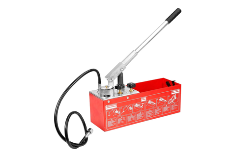
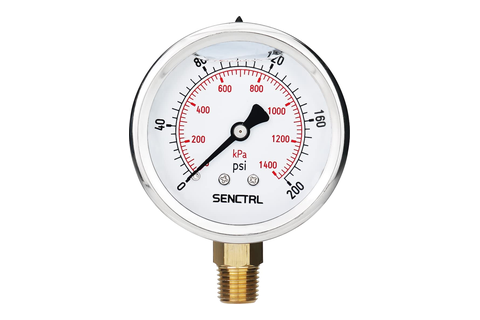
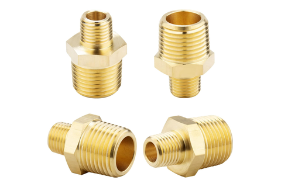
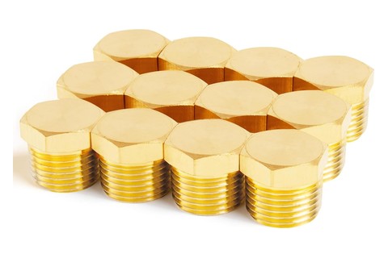
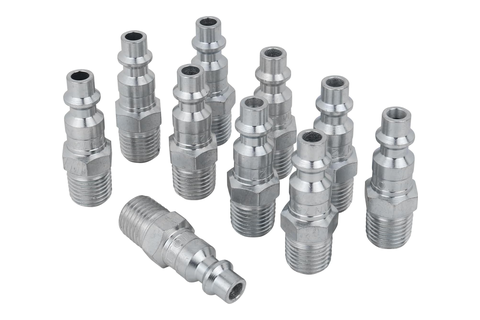

Hydro + pressure test
BEAMNOVA hydrostatic pump · one hold, and the four ports that make it
Tool station · 04/13Kitchen edition
One operation, a whole rig. The vessel comes
to the bench bare — welded and tapped, nothing else on it — and
all four of its 1/4″ NPT ports are spoken for:
one takes the pump, one takes the gauge you watch, the rest are dead-headed.
Every joint gets tape.
Pump
BEAMNOVA 0–726 PSI
Test
180 PSI held 30 min
Gauge
SENCTRL 0–200 glycerin
Seal
PTFE tape every NPT joint
Operation
In the port
Set to
What it is really for
Dead-headPV-11
ChillWaves brass outer-hex plug
rated 1200 PSI — far over the test
Every port the rig doesn't take
bare vessel: no PRV, no fittings, no cold core
The vessel is proved as itself — the plugs stand in for every
fitting it will carry later.
Pump onPV-11
KOOTANS 1/2″ M × 1/4″ M hex nipple
1/2″ end seals on the hose's gasket swivel, 1/4″ end takes the tape
0–726 PSI, 3.17 gal reservoir
the test sits at ~25 % of the pump's scale
One brass adapter is the entire interface between a hydraulic hose end
and a tapped stainless port.
HoldPV-11
SENCTRL 2.5″ dial, lower mount
glycerin-filled, SS case — it stays on for the soak
180 PSI for 30 minutesthe gauge reads 90 % of scale there
~2× the 90 PSI working pressure — the
volumetric proof behind PV-10's surface screen.
Air re-check§7 · post-hydro
Milton 727 M-STYLE 1/4″ MNPT air plug
mates the DeWalt DWFP55130 coupler at the hose end
after hydro§7 names the rig, not a pressure
A follow-on pneumatic leak check, run only on vessels that already
passed the hold.
Both criteria are open. Working pass position is no
visible drop on the gauge and no weep at welds or threads; the committed
PSI-drop tolerance, and the re-weld-vs-scrap tree behind a faint weep,
are undefined.
Hour-scale soaks beyond the 30-minute minimum: the
glycerin gauge stays on a port and resolves slow drift before
passivation.
Same rig, optional pop test. PRV subassembly into
Port 4, other three plugged, ramp until it cracks —
121–129 PSI
(±3 % of 125 PSI).
Have in hand

BEAMNOVA0–726 PSI pump

SENCTRL0–200 glycerin

KOOTANS1/2″ × 1/4″ nipple

ChillWaves1/4″ NPT plugs

Milton 727M-style air plug
Pre-passivation, pre-assembly — the vessel
holds pressure on nothing but its own two closure welds, four tapped
ports, and the rig threaded into them.